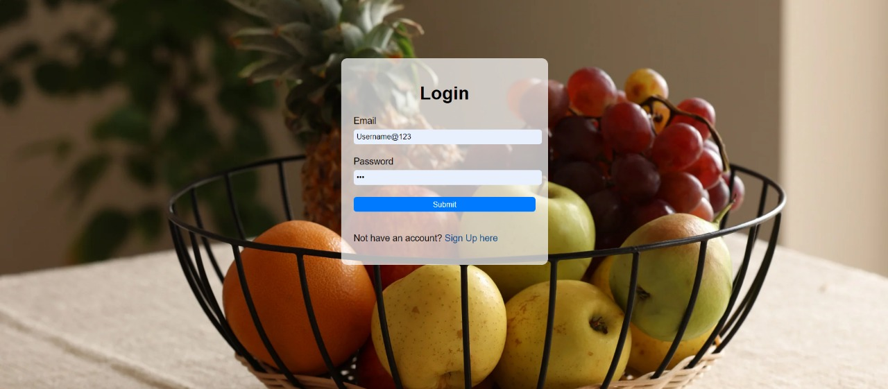
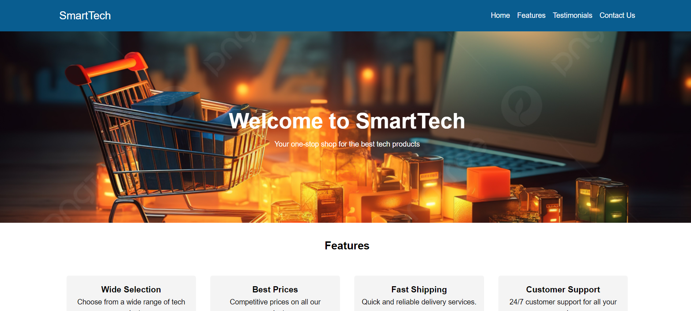
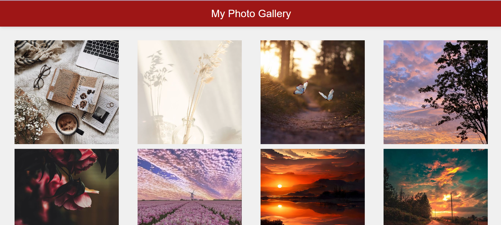
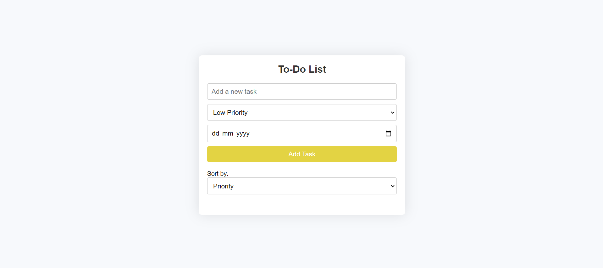
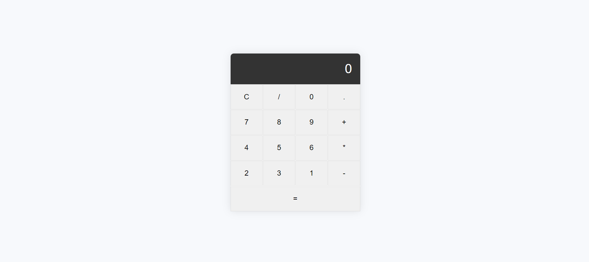

Project 1
Developed Smart Basket, a Big Basket clone app, featuring user-friendly design, inventory management, and secure payments, enhancing user experience with real-time tracking and personalized recommendations.
Technologies used: HTML, CSS, JavaScript
Project 2
An interactive landing page captures attention, highlights features, and drives actions for smart tech products.
Technologies used: HTML, CSS, JavaScript
Project 3
Nature photo gallery which showcases images, delivering an immersive viewing experience that captivates audiences across all devices.
Technologies used: HTML, CSS, JavaScript
Project 4
A to-do list created with HTML, CSS, and JavaScript is a simple web application that allows users to add, edit, and delete tasks, providing an interactive way to manage daily activities..
Technologies used: HTML, CSS, JavaScript
Project 5
A calculator is a web application that allows users to perform arithmetic calculations and display a history of these calculations, has a numeric keypad and operation buttons...
Technologies used: HTML, CSS, JavaScript